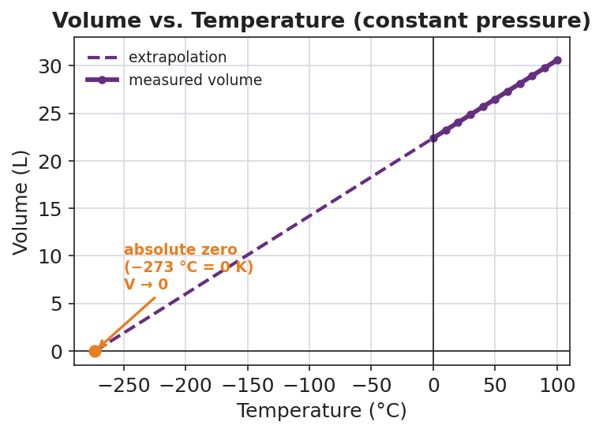

01 Phenomenon
You fill your tires to exactly 32 psi on a warm afternoon. The next morning is the first freeze of the year, and the low-pressure warning light comes on — but there is no nail and no leak. By afternoon the light goes off by itself, and the gauge reads 32 psi again. The same air, the same sealed tire — only the temperature changed. Your teacher also shows two demos: a balloon shrinks to a fraction of its size in liquid nitrogen and re-inflates on the counter, and a soda can with a little steam inside implodes when plunged into ice water.
02 Driving question
Why do tire pressures drop on cold winter mornings, even though no air escaped?
03 Notice & wonder
| I notice… | I wonder… |
|---|---|
Turn & Talk #1: The balloon shrank in the cold and the can’s pressure dropped in the cold. Both gases got smaller or weaker. In one sentence: if you kept cooling a gas, colder and colder, do you think there is a temperature where its volume or its pressure would reach zero? Where might that be?
04 Initial model
Use the volume-vs-temperature graph below. Read two points: at 0 °C the volume is about 22.4 L; at 100 °C the volume is about 30.6 L.

- First, try Celsius. Divide volume by the Celsius temperature for each point:
22.4 ÷ 0 = ____________ 30.6 ÷ 100 = ____________
Do the two ratios match? _______________
- Now shift the scale. Add 273 to each Celsius temperature, then divide volume by that new number:
22.4 ÷ (0 + 273) = 22.4 ÷ ____ = ____________ 30.6 ÷ (100 + 273) = 30.6 ÷ ____ = ____________
Do these two ratios match? _______________
- What does the matching ratio tell you about how volume depends on temperature — and which temperature scale you must use?
05 Investigate
Part 1 — Predict, then extrapolate (look at both graphs)
![Line graph titled ‘Pressure vs. Temperature (constant volume)’ for the air sealed in a tire. A solid blue line of data points rises as temperature rises across a realistic window (about −20 °C to +40 °C); a dashed blue line extends the straight trend down to zero pressure at −273 °C. Purple labels mark a ‘cold morning −10 °C’ point at lower pressure and a ‘warm day +30 °C’ point at higher pressure. An orange point and label at (−273 °C, 0 psi) reads ‘absolute zero (−273 °C = 0 K), P → 0’. The x-axis is Temperature in degrees Celsius and the y-axis is Pressure in psi (absolute).](fig/04_04/pressure_vs_temperature.png)
On the solid part of each line: as temperature goes up, what does volume do? ____________ What does pressure do? ____________
Follow the dashed line on each graph down to where the quantity reaches zero. What temperature (in °C) does each line cross zero at?
Volume graph crosses zero at: ____________ °C Pressure graph crosses zero at: ____________ °C
- Both lines cross zero at the same temperature. Write it here — this is the coldest temperature possible:
____________ °C
Part 2 — T–V and T–P calculations
Use V₁ / T₁ = V₂ / T₂ (constant pressure) and P₁ / T₁ = P₂ / T₂ (constant volume). Always convert temperature to Kelvin first: K = °C + 273.
Problem A — the balloon (T–V). A balloon holds 2.0 L of air at 27 °C. It is cooled to −123 °C at constant pressure. Find the new volume.
| Step | Work |
|---|---|
| Convert temperatures to Kelvin | T₁ = 27 + 273 = ____ K · T₂ = −123 + 273 = ____ K |
| Set up the proportion | 2.0 / ____ = V₂ / ____ |
| Solve for V₂ | V₂ = ____________ L |
Problem B — the tire (T–P). Air in a tire is at 30. psi and 300 K on a warm day. Overnight the temperature drops to 270 K at constant volume. Find the new pressure.
| Step | Work |
|---|---|
| Temperatures (already in Kelvin) | T₁ = 300 K · T₂ = 270 K |
| Set up the proportion | 30. / ____ = P₂ / ____ |
| Solve for P₂ | P₂ = ____________ psi |
Problem C — warming a gas (T–V). A gas occupies 5.0 L at 200 K. It is heated to 400 K at constant pressure. Find the new volume.
| Step | Work |
|---|---|
| Temperatures (already in Kelvin) | T₁ = 200 K · T₂ = 400 K |
| Set up the proportion | 5.0 / ____ = V₂ / ____ |
| Solve for V₂ | V₂ = ____________ L |
What pattern do you see in Problem C — when the Kelvin temperature doubled, what did the volume do?
06 Make it make sense
Solve each problem completely. Convert to Kelvin first, set up the proportion, and solve. These are the same problems you set up in the Investigation — confirm your final answers here.
1. Balloon (T–V): 2.0 L at 27 °C cooled to −123 °C at constant pressure. V₂ = ?
Kelvin: T₁ = ____ K, T₂ = ____ K Proportion: ________________________ V₂ = ____________ L
2. Tire (T–P): 30. psi at 300 K cooled to 270 K at constant volume. P₂ = ?
Proportion: ________________________ P₂ = ____________ psi
3. Warming a gas (T–V): 5.0 L at 200 K heated to 400 K at constant pressure. V₂ = ?
Proportion: ________________________ V₂ = ____________ L
07 Key vocabulary
- absolute zero
- the lowest possible temperature, −273 °C (0 K), at which the extrapolated volume and pressure of an ideal gas both reach zero; no substance can be cooled below it
- Kelvin scale
- the absolute temperature scale that begins at absolute zero, where 0 K = −273 °C; convert with K = °C + 273; gas-law proportions only work when temperature is expressed in kelvins
- direct relationship
- a proportional connection in which two quantities rise and fall together, graphing as a straight line; for a fixed gas, volume is directly proportional to absolute temperature at constant pressure, and pressure is directly proportional to absolute temperature at constant volume
Use each term in a sentence about today’s investigation. Do not copy the definition — describe something you actually did, calculated, or observed.
absolute zero: _______________________________________________ _______________________________________________
Kelvin scale: _______________________________________________ _______________________________________________
direct relationship: _______________________________________________ _______________________________________________
08 Revise your model
Return to your Initial Model (the two ratios). Add labels:
Draw a box around the + 273 step. Label it “convert to Kelvin.”
The two ratios that matched are evidence of a __________________ relationship between volume and absolute temperature.
On the volume graph, circle the point at −273 °C and label it: __________________ (____ K).
Then finish this Because / But / So sentence:
A tire reads 32 psi on a warm afternoon but trips the low-pressure light after a freezing night, even though no air escaped, because __________________________________________, but __________________________________________, so __________________________________________.
09 Exit ticket
(a) A gas occupies 4.0 L at 250 K at constant pressure. It is warmed to 500 K. Find the new volume. Show the Kelvin step and the proportion V₁/T₁ = V₂/T₂.
| Step | Work |
|---|---|
| Temperatures | T₁ = ____ K · T₂ = ____ K |
| Proportion | 4.0 / ____ = V₂ / ____ |
| Solve | V₂ = ____________ L |
(b) A sealed rigid container holds gas at 200 kPa and 400 K. It is cooled to 200 K at constant volume. Find the new pressure. Show the proportion P₁/T₁ = P₂/T₂.
| Step | Work |
|---|---|
| Temperatures | T₁ = ____ K · T₂ = ____ K |
| Proportion | 200 / ____ = P₂ / ____ |
| Solve | P₂ = ____________ kPa |
(c) In one sentence, explain why the tire’s pressure came back to 32 psi by the afternoon without anyone adding air.
10 Explore further
- Balloon-in-liquid-nitrogen demonstration (teacher-led, constant pressure): Inflate a balloon, record its approximate circumference, then lower it into a dewar of liquid nitrogen. Students observe the balloon collapse, then re-expand as it warms. Discussion: the air inside is the same; only temperature changed; volume followed temperature. Safety: liquid nitrogen requires cryo-gloves, goggles, and a face shield; teacher demonstration only. Connect to `figures/volume_vs_temperature.png`.
- Collapsing-can demonstration (teacher-led, constant volume → pressure drop): Boil a small amount of water in an empty soda can, then invert it quickly into ice water using tongs. The can implodes as the steam cools and condenses and the internal pressure drops. Discussion: cooling a trapped gas drops its pressure; here the outside air pressure crushes the can. Safety: hot can and steam; use tongs and goggles; teacher demonstration only.
- T–V / T–P graph reading (student): Using `figures/volume_vs_temperature.png` and `figures/pressure_vs_temperature.png`, students extend each straight line back to where volume (or pressure) would reach zero and read off the temperature: −273 °C. This is the empirical route to absolute zero — students *find* it on the graph rather than being told.
- Optional Javalab gas-property simulation: any virtual gas-law module that lets students hold pressure constant and vary temperature (watching volume change), then hold volume constant and vary temperature (watching pressure change), reinforces the two relationships before the calculation practice.